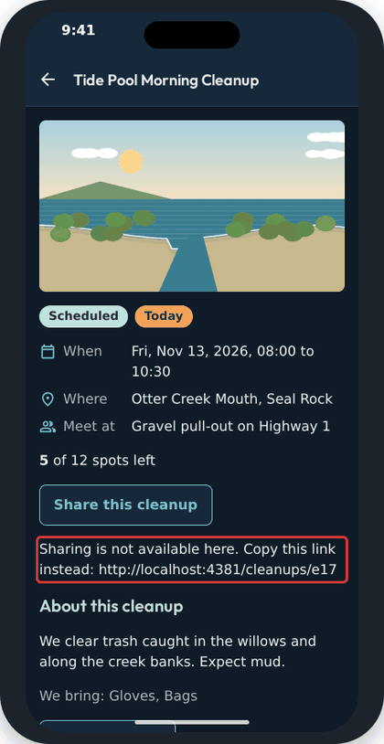

🔗 Lesson 4.4: Deep Links
On Thursday evening a crew leader texts the volunteers: "Weekend Cove needs four more pairs of hands on Saturday." Below the message is a link. Tapping it should not drop people on the app's first screen to go hunting; it should open Weekend Cove itself, with the meeting point and the tide notes, and a back button that leads somewhere sensible. Today Shoreline Crew learns to be opened like that, and to send such links itself.
🎯 Learning Objectives
By the end of this lesson, you will be able to:
- Read a deep link such as
shorelinecrew://cleanups/e08: its scheme, its path, and the file insrc/appthat answers it - Say which form of a link opens the app in a build, in Expo Go and in the web preview, and let
Linking.createURLmake the right one - Put the tabs underneath a screen opened by a link with
unstable_settings.anchor, and predict where a link to a guarded screen goes - Share a link to a cleanup through the phone's share sheet with React Native's
Share, with a fallback where there is none - Open links on an Android emulator, an iOS Simulator or a phone, and treat every incoming link as input from outside
📦 Code for this lesson
Starting code: lesson-14-start.zip · Finished code: lesson-14-end.zip. Each folder has a README with the commands to run it.
In This Lesson
👋 Welcome: A Link in a Text Message
In the HQ web app, links were free. Every page had an address, the browser showed it, and pasting it into a message brought anyone straight back to the same page. A phone app has no address bar. For a link to open a screen inside Shoreline Crew, two things have to happen: the phone must know which app a link belongs to, and the app must turn the link into a screen.
The second half is mostly done already. Since Lesson 4.1, every screen in src/app has an address (/cleanups/e08, /profile, /sign-in), and Expo Router uses exactly those addresses for links from outside. By the end of today:
- You can read any link into the app and say which file answers it, including the odd-looking form Expo Go uses during development.
- A cleanup opened from a link has the tabs underneath it, so its back button leads to the Cleanups tab instead of out of the app.
- You know where links to guarded screens go, and why a link can never do more than open a screen.
- A Share this cleanup button sends the cleanup's name, time, meeting point and a link through the phone's share sheet.
- You can open links on a device from your terminal, the way you will test notifications later.
Why it matters for your work: deep links are how notifications, emails, QR codes and "share" buttons bring people back into an app, and "the link opened the app but not the right screen" is one of the most common bugs reported against real apps. Teams care because links are measurable: a link that lands in the right place is a volunteer who signs up.
Why it matters for the volunteers: someone reading a crew leader's message on the bus has a minute, not five. One tap to the right cleanup is the difference between "I'll come" and "I'll look later".
🧭 What a Deep Link Is
A deep link is a link that opens a particular screen inside an app, not just the app. Here is the one this lesson is about:
| Part | In shorelinecrew://cleanups/e08 | What it means |
|---|---|---|
| Scheme | shorelinecrew | Which app: the phone gives every link with this scheme to the app that registered it |
| Path | cleanups/e08 | Which screen: Expo Router reads it like the address in the web preview, /cleanups/e08 |
| Search params (optional) | ?from=text | Extra values, read with useLocalSearchParams like the route's own params (Lesson 4.1) |
The scheme is already in your project. create-expo-app wrote it into app.json in Lesson 1.2, from the project's name:
{
"expo": {
"name": "Shoreline Crew",
"slug": "shoreline-crew",
"version": "1.0.0",
"orientation": "portrait",
"icon": "./assets/images/icon.png",
"scheme": "shorelinecrew",
...A scheme is letters (digits, +, - and . are allowed too), and by custom it is the app's name in lowercase. When the app is built, the scheme is written into the iOS and Android projects, and installing the app tells the phone "links that start with shorelinecrew:// are mine". That is also why changing it later needs a new build: the phone learned it at install time.
Then Expo Router does what it does for every address. Each path below was opened in the web preview (the same paths, with http://localhost:8081 in front):
| Link | File that answers | What the volunteer sees (measured in the web preview) |
|---|---|---|
shorelinecrew://cleanups/e08 | src/app/cleanups/[id].tsx, id = "e08" | Weekend Cove Cleanup |
shorelinecrew://profile | src/app/(tabs)/profile.tsx (the group adds nothing to the address) | The Profile tab |
shorelinecrew://cleanups/e99 | src/app/cleanups/[id].tsx, id = "e99" | "Nothing was found at this address. Check the link." (the API's 404, Lesson 4.1) |
shorelinecrew://nowhere/e08 | src/app/+not-found.tsx | "This page is not on the map" |
So the work you did in Lesson 4.1, typed params and a screen that handles an id the API does not know, is exactly what makes links safe to follow. A link is just an address that arrives from outside.
💡 Mental model: the grid reference on the crew map
Crew leaders mark the beach on a printed map with a grid: "C4, the north rocks". Anyone holding that map can walk straight to C4 without starting at the car park. A deep link is a grid reference. The scheme says which map (Shoreline Crew's, not some other app's), and the path says where on it. If the reference points at a square that does not exist, a good map says so instead of leaving you lost: that is your not-found screen.
🔀 One Screen, Three Kinds of Link
During this course the app runs in three different places, and a link to Weekend Cove looks different in each. The forms below come from expo-linking's source and the Expo documentation; the web preview's form was measured.
| The app runs in | A link to Weekend Cove | Why |
|---|---|---|
| A build of your app (a development build in Module 9, or the store version) | shorelinecrew://cleanups/e08 | The build registered your scheme with the phone |
| Expo Go, during development | exp://192.168.1.42:8081/--/cleanups/e08 | Expo Go is one app that runs many projects. It owns the exp scheme, not yours; the address says which development server to load, and /--/ separates it from the path inside your app |
| The web preview | http://localhost:8081/cleanups/e08 | A browser, so an ordinary web address (measured) |
The 192.168.1.42:8081 part is the same address that npx expo start prints under its QR code (› Metro: exp://192.168.1.42:8081, Lesson 1.2); yours will differ. That is also the catch with Expo Go links: they work only on a phone that has Expo Go and can reach your computer. They are for testing, not for texting to volunteers.
You do not have to choose. expo-linking (installed with the template, so nothing to add) has createURL, which looks at where the app is running and builds the right form:
import * as Linking from 'expo-linking';
// The same screen, the right link for wherever the app is running right now
const link = Linking.createURL('/cleanups/e08');
// A build: shorelinecrew://cleanups/e08
// Expo Go: exp://192.168.1.42:8081/--/cleanups/e08
// Web preview: http://localhost:8081/cleanups/e08
console.log(link);In the web preview that gave http://localhost:8081/cleanups/e08 (measured with the course's own ports, then shown with yours). In Expo Go and in a build, the documentation and the library's source say you get the other two forms. Shoreline Crew never writes shorelinecrew:// by hand; Step 4 of the project puts createURL in one small function.
🗂️ What Is Underneath a Linked Screen
When you tap Open on a card, the cleanup screen is pushed on top of the tabs, and back returns to the list. A link is different: the app may not even be running, and it starts directly at /cleanups/e08. What is underneath it then? The course measured it in the web preview, opening each address directly:
| Opened directly | Without an anchor (the Lesson 4.3 code) | With anchor: '(tabs)' |
|---|---|---|
/cleanups/e08 | The cleanup alone: no back button, no tabs anywhere | The tabs underneath; a back button that opens the Cleanups tab |
/before-you-go | The modal alone; Done has nothing to go back to, so it replaces itself with the Cleanups tab | The tabs underneath; a back button, and Done goes back to them |
/sign-in (signed out) | The sign-in modal alone | The tabs underneath; after signing in, the modal closes back to them |
Without an anchor, the root stack holds only the screen the link named. On an Android phone, back would leave the app; the web preview shows no back button at all. Lesson 4.1's leave() already copes with that for the "not found" button (router.canGoBack() is false, so it replaces the screen with /), but the header's own back button cannot appear when there is nothing to go back to.
The fix is one export in a layout. unstable_settings.anchor names the screen that is always at the bottom of that layout's stack, whatever address the app opens at:
// In src/app/_layout.tsx, next to the root layout: the screen that is always at the bottom
// of this stack. A screen opened by a link then has something to go back to.
export const unstable_settings = {
anchor: '(tabs)',
};Why '(tabs)' and not 'index'? The anchor must be the name of a screen in that layout. The root stack's screens are (tabs), cleanups/[id], before-you-go, sign-in and +not-found; index lives one level down, inside the tabs. The first Common Mistake shows what Expo Router says if you name it anyway. With the tabs as the anchor, the Cleanups tab (their first tab) is what you see when you go back.
The tabs underneath are real screens, not a picture. The course counted the requests the web preview made when it opened /cleanups/e08 directly: without the anchor, one (GET /api/events/e08); with it, three, because the Cleanups tab underneath also loaded its first page of cleanups and the sites. That is the price of a back button that leads somewhere, and on a phone with one bar of signal it is worth knowing. The cleanup's own request comes first, so the screen the volunteer asked for is not kept waiting.
An anchor also changes what "replace" means. Lesson 4.1's not-found screen sent volunteers home with <Link href="/" replace>. With the tabs already underneath, replacing the not-found screen with / put a second copy of the tabs on top of the first (measured: two tab bars in the page). Step 3 switches it to dismissTo, which closes screens until it reaches / and only replaces when there is nothing to go back to.
🧩 Version note: "unstable_" in the name
The unstable_ prefix is Expo Router's way of saying the name may change; it has been there for several SDKs, and the Expo Router documentation for SDK 58 still uses it. Expo Router 58 also uses the anchor as the default target of Stack.Protected's redirect (its type says "Defaults to the containing navigator's anchor"). If a future SDK renames it, the release notes will say so, and tsc will not warn you, because the export is a plain object: check the router's docs when you upgrade.
🚧 Links to Guarded Screens, and Links You Did Not Write
Lesson 4.3 measured what happens when someone reaches a screen whose Stack.Protected guard is false: Expo Router redirects to the stack's anchor. A link from outside is just another way to arrive, and the course measured it again with the anchor in place:
| Link | Who follows it | What happens (measured in the web preview) |
|---|---|---|
/sign-in | A guest | The sign-in modal, with the tabs underneath; signing in closes it back to the Cleanups tab |
/sign-in | Theo, signed in | The route does not exist for him, so Expo Router redirects to the anchor: the Cleanups tab |
/cleanups/e08 | Anyone | The cleanup, with the tabs underneath: cleanup screens are for everyone |
Lesson 5.4 adds a screen for signed-in volunteers only, the debris log. If a guard took it out, a guest who follows a link to it would land on the Cleanups tab by the same rule, without being told why; when you build it in Lesson 5.4, you will decide what such a guest should see instead.
🛑 A link only opens a screen
Anyone can write a link: a crew leader, a confused volunteer, or someone hoping to trick people. shorelinecrew://cleanups/anything reaches your screen with id = "anything". Treat every link like form input. Shoreline Crew does three things right already: the id goes to the API inside encodeURIComponent, an id the API does not know shows "Nothing was found", and an unknown path shows the not-found screen. And keep one rule for every screen you add: a link never acts on its own. It may open the cleanup; the volunteer presses Sign up. A link that signed someone up, cancelled a sign-up or deleted a log just by being opened could be sent to anyone. Never put a token or a password in a link either: links end up in message histories and screenshots.
📲 Opening Links on a Device
Following a link inside the web preview is just typing an address. Testing a link from outside the app, the way a volunteer taps it, needs an emulator, a simulator or a phone. The course could not run these here (no Android emulator, and the iOS Simulator only runs on a Mac), so the commands below come from the Expo documentation and the tools' own source, with what the tools printed on a computer without an emulator.
| Where | Command (Expo Go form; with a development build use shorelinecrew://cleanups/e08) |
|---|---|
| Android emulator | npx uri-scheme open "exp://192.168.1.42:8081/--/cleanups/e08" --android |
| Android, without the helper | adb shell am start -a android.intent.action.VIEW -d "exp://192.168.1.42:8081/--/cleanups/e08" |
| iOS Simulator (Mac) | npx uri-scheme open "exp://127.0.0.1:8081/--/cleanups/e08" --ios |
| iOS, without the helper | xcrun simctl openurl booted "exp://127.0.0.1:8081/--/cleanups/e08" |
uri-scheme is a small tool from the Expo team that you run with npx (the first run asks to install it). Its source shows it is a shortcut for the two "without the helper" commands: on Android it runs adb shell am start with a "view this address" intent, and on iOS xcrun simctl openurl booted, which opens the address in the simulator that is running. Put the address in quotes: a ? or & in a link means something to your shell. The iOS Simulator runs on the same Mac as Metro, so 127.0.0.1 reaches it; an Android emulator uses the address Expo printed. On a computer without Xcode (here run with the development-build form of the link), the iOS command fails in a way that tells you exactly that:
Expected output
› iOS: Opening URI "shorelinecrew://cleanups/e08" in simulator
Aborting run
An unexpected error was encountered. Report it: https://github.com/expo/expo/issues
Error: spawn xcrun ENOENT
at ChildProcess._handle.onexit (node:internal/child_process:316:19)
at onErrorNT (node:internal/child_process:554:16)
at process.processTicksAndRejections (node:internal/process/task_queues:90:21) {
errno: -2,
code: 'ENOENT',
syscall: 'spawn xcrun',
path: 'xcrun',
spawnargs: [ 'simctl', 'openurl', 'booted', 'shorelinecrew://cleanups/e08' ],
...spawn xcrun ENOENT means "I tried to run a program called xcrun and there is no such program": the Xcode tools are missing. The Android command, with no adb on the computer and no emulator running, printed its first line and stopped with an error code. Neither is a problem with your app.
📱 On your phone
A real phone has no terminal, so you open the link the way a volunteer would: send it to yourself (a note, an email, a chat with yourself) and tap it. The documentation describes what to expect: tapping an exp:// link opens Expo Go, which loads your project from Metro and shows Weekend Cove, as long as Metro is running and the phone can reach your computer (Lesson 5.1 covers the network side). If Shoreline Crew is already open, the link opens the cleanup on top of where you were. A shorelinecrew:// link does nothing in Expo Go: that scheme only exists once you have your own build.
⚠️ Common Mistakes
Link bugs are sneaky because the code that builds a link and the place where it is tapped are far apart: an error may show up on a different phone, a day later. Each mistake below was made on purpose in the finished project (or read in the libraries' source, where a phone is needed) and is quoted the way the tools printed it.
⚠️ An anchor that is not in the layout
Write anchor: 'index' in the root layout, because the Cleanups screen is index.tsx. tsc and ESLint say nothing (the setting is a plain object), the web preview shows a blank page, and Metro's terminal says:
Expected output
...
λ ERROR SSR streaming render error: Error: The initial route name "index" was not found in the layout at "./_layout.tsx". Available routes are: "+not-found", "before-you-go", "sign-in", "(tabs)", "cleanups/[id]". Set `unstable_settings.anchor` to the name of a route in this layout.
...
Metro error: The initial route name "index" was not found in the layout at "./_layout.tsx". Available routes are: "+not-found", "before-you-go", "sign-in", "(tabs)", "cleanups/[id]". Set `unstable_settings.anchor` to the name of a route in this layout.
...Read the list it gives you: those are the root layout's screens, and index is not one of them, because it lives inside (tabs). The anchor names a screen of the layout it is written in. On a phone, the same error appears as a red screen.
⚠️ Two tab bars after "Back to the cleanups"
Add the anchor and keep the not-found screen's <Link href="/" replace>. Open a mistyped address and press Back to the cleanups: the list looks right, but the page now holds two tab bars (measured), because the tabs that were already underneath got a copy on top. Nothing prints a warning. A plain <Link href="/"> is no better: it pushed the copy and added a back button to it. dismissTo closes screens back to the existing tabs instead (Step 3).
⚠️ "Property 'message' is missing"
Share.share() needs something to share. Pass only a title, Share.share({ title: event.title }), and npx tsc --noEmit prints:
Expected output
src/app/cleanups/[id].tsx:97:25 - error TS2345: Argument of type '{ title: string; }' is not assignable to parameter of type 'ShareContent'.
Property 'message' is missing in type '{ title: string; }' but required in type '{ title?: string | undefined; url?: string | undefined; message: string; }'.
97 await Share.share({ title: event.title });
~~~~~~~~~~~~~~~~~~~~~~
node_modules/react-native/types_generated/Libraries/Share/Share.d.ts:21:3
21 message: string;
~~~~~~~
'message' is declared here.
Found 1 error in src/app/cleanups/[id].tsx:97React Native's type for the content is "a url, or a message, or both", written as two object types joined by |. TypeScript picked the one with message to complain about and showed you where message: string is declared. The fix is what the type asks for: give it a message.
⚠️ The link only in url
Share.share({ message: 'Join me!', url: link }) type-checks and looks fine on an iPhone. On Android the link is gone: React Native's Android code passes only title and message to the share sheet (read in its source; the Android emulator could not be run here). Put the link inside the message, as Shoreline Crew does.
⚠️ Writing shorelinecrew:// by hand
A shared message with a hand-written shorelinecrew://cleanups/e08 opens nothing while you develop in Expo Go: that scheme belongs to a build of your app, and Expo Go answers exp:// links (the documentation and expo-linking's source agree). Changing scheme in app.json does not help either: the phone learns a scheme when a build is installed. Build links with Linking.createURL, and the right form comes out in each place.
🛠️ Project: Links Into Shoreline Crew
You read the app's address, follow links in the web preview, give linked screens the tabs underneath, make links to cleanups, add a Share this cleanup button, and try a link from outside the app if you have an emulator, a simulator or a phone. Keep shoreline-api running in its own terminal (node server.ts) and Metro in another (npx expo start, then w). Work in the shoreline-crew folder. No packages to install today: expo-linking came with the template, and Share is part of React Native.
Step 1: Your app's address (5 min)
Open app.json and find "scheme": "shorelinecrew" (shown in What a Deep Link Is). Then ask the uri-scheme tool which schemes the project has. The first time, npx asks Ok to proceed? (y): press Enter.
npx uri-scheme listExpected output
Could not find any native URI schemes to list.That is not a problem with your app. uri-scheme reads the native iOS and Android projects, and an Expo project has none yet: there are no ios/ or android/ folders. Expo creates them from app.json when you make a build (Module 9), and that is when your scheme is written into them. Until then, app.json is the one place it lives.
Step 2: Follow links in the web preview (10 min)
The web preview's address bar is the quickest way to try a link. Type each address into it (yours may use a different port if Metro printed one) and note what you see, and whether there is a back arrow:
http://localhost:8081/cleanups/e08: Weekend Cove, with no back arrow and no tab bar. This is what a volunteer would get from a link today.http://localhost:8081/cleanups/e99: "Nothing was found at this address. Check the link."http://localhost:8081/nowhere/e08: the not-found screen.http://localhost:8081/before-you-go: the safety briefing on its own; Done takes you to the Cleanups tab.http://localhost:8081/sign-in: the sign-in modal, with nothing underneath.
Each of these is exactly what shorelinecrew:// plus the same path would open on a phone. Pressing Enter in the address bar reloads the page, so you start signed out each time (Lesson 4.3: the web preview keeps the session in memory only).
Step 3: The tabs underneath every link (10 min)
In src/app/_layout.tsx, add the anchor below the splash-screen line, outside the component (Expo Router reads it from the module, not from a render):
// Keep the splash screen up while the fonts and the saved session load (runs once, at startup)
SplashScreen.preventAutoHideAsync();
+
+// Whatever address the app opens at, the tabs are underneath it. A link straight to a cleanup
+// then has a back button, and back leads to the Cleanups tab instead of out of the app.
+export const unstable_settings = {
+ anchor: '(tabs)',
+};
export default function RootLayout() {Then make the not-found screen's button close screens instead of replacing one, so it lands on the tabs that are now underneath. In src/app/+not-found.tsx:
<AppText>The link may be old, or mistyped. The cleanups are all on the first screen.</AppText>
- {/* replace: the Cleanups screen takes this screen's place, so Back does not return to a dead end */}
- <Link href="/" replace asChild>
+ {/* dismissTo: close screens back to the tabs underneath (the anchor), or take this screen's
+ place when there is nothing underneath. Back never returns to a dead end. */}
+ <Link href="/" dismissTo asChild>
<Button label="Back to the cleanups" variant="primary" />Now open http://localhost:8081/cleanups/e08 again. The header has a back arrow, and pressing it opens the Cleanups tab:

anchor: '(tabs)' the tabs are underneath, so the header has a back arrow, and it leads to the Cleanups tab. On a phone the header and its back button look like the platform's own.Try the other addresses from Step 2 too. /before-you-go and /sign-in now have a back arrow as well, and Back to the cleanups on /nowhere/e08 leaves exactly one tab bar on the page. The cleanup screen's own leave() and the modal's Done needed no change: router.canGoBack() is now true, so they go back to the tabs.
Step 4: A link maker for cleanups (10 min)
Links are built in one place, so that if the address of a cleanup ever changes, one function changes with it. Create src/utils/links.ts:
import * as Linking from 'expo-linking';
import type { CleanupEvent } from '@/api/types';
import { formatDate } from '@/utils/format';
/**
* A link that opens one cleanup in Shoreline Crew. Linking.createURL builds it for wherever the
* app is running: shorelinecrew://cleanups/e08 in a build of the app, exp://…/--/cleanups/e08 in
* Expo Go, and http://localhost:8081/cleanups/e08 in the web preview.
*/
export function cleanupLink(id: string): string {
return Linking.createURL(`/cleanups/${id}`);
}
/** The words a volunteer shares: what, when, where to meet, and the link */
export function cleanupMessage(event: CleanupEvent, link: string): string {
return [
`Join me at ${event.title}!`,
`${formatDate(event.date)}, ${event.startTime} to ${event.endTime}. Meet at ${event.meetingPoint}.`,
link,
].join('\n');
}cleanupLink(id)is the only place in the app that knows a cleanup's address in a link.createURLadds the right beginning for a build, Expo Go or the web preview (One Screen, Three Kinds of Link).cleanupMessage(event, link)writes what a friend needs to decide: what, when, and where to meet, then the link on its own line, where it is easy to see and to tap. It reusesformatDate, so the date reads the same as on the cards. It takes aCleanupEvent, so it works with the list's data as well as the detail screen's.
Step 5: Share this cleanup (20 min)
The cleanup screen gets the button. In src/app/cleanups/[id].tsx, import Share and the link maker:
-import { StyleSheet, Text, View } from 'react-native';
+import { Share, StyleSheet, Text, View } from 'react-native';
import { ApiError, describeError, getEvent } from '@/api/client';
// ...
import { formatDate, toDateString } from '@/utils/format';
+import { cleanupLink, cleanupMessage } from '@/utils/links';Next to the other state, a place for the link when there is no share sheet. It must sit with the other hooks, above the early return for the loading screen (hooks always run in the same order):
const [attempt, setAttempt] = useState(0);
+ // The link to copy, when this device has no share sheet to send it with
+ const [linkToCopy, setLinkToCopy] = useState<string | null>(null);
const styles = useStyles();Then the function that shares, after the cleanup has loaded (it needs event):
const availability = getAvailability(event);
+
+ // The phone's share sheet, with a message and a link that opens this screen
+ async function share() {
+ const link = cleanupLink(event.id);
+ try {
+ // Android shares the title and the message only, so the link goes inside the message
+ await Share.share({ title: event.title, message: cleanupMessage(event, link) });
+ } catch {
+ // No share sheet here (the web preview in most desktop browsers): show the link instead
+ setLinkToCopy(link);
+ }
+ }
return (And the button, under the spots line, where a volunteer deciding whether to bring a friend is looking:
<AppText style={styles.strong}>Full: new sign-ups join the waiting list</AppText>
)}
+ <Button label="Share this cleanup" onPress={share} />
+ {linkToCopy !== null && (
+ <AppText selectable accessibilityLiveRegion="polite">
+ Sharing is not available here. Copy this link instead: {linkToCopy}
+ </AppText>
+ )}
<AppText variant="heading" accessibilityRole="header">
About this cleanupawait Share.share(…)insidetry. On a phone, the share sheet opens and the Promise resolves when it closes; nothing else to do. Where there is no share sheet, it rejects, and the screen shows the link instead.selectablelets the volunteer press and hold (or drag the mouse over it in the web preview) to copy the text. PlainTextin React Native is not selectable unless you say so.accessibilityLiveRegion="polite", as on the sign-in form's errors: TalkBack announces the message when it appears.- The button's label says what it does. "Share this cleanup" needs no extra
accessibilityLabel: the screen's title says which cleanup.
Press Share this cleanup in the web preview. A desktop Chromium has no share sheet, so you see the fallback with the web preview's link:

Some browsers do have one (Safari, and Chrome on some systems): there you get the system's share panel instead, and closing it without sharing also shows the link, because the browser's navigator.share() rejects when it is cancelled. The course also checked what the app hands to a browser's share sheet, by giving the page a stand-in navigator.share that records its argument: the title "Weekend Cove Cleanup", and as the text the three lines from cleanupMessage, ending with the link.
Step 6: A link from outside the app (15 min)
If you have an Android emulator, the iOS Simulator (on a Mac) or a phone running the project in Expo Go, open a link the way a volunteer would. Start Metro as usual and note the › Metro: exp://… address it prints. Then, for the Android emulator:
npx uri-scheme open "exp://192.168.1.42:8081/--/cleanups/e08" --androidFor the iOS Simulator:
npx uri-scheme open "exp://127.0.0.1:8081/--/cleanups/e08" --iosUse your own address in place of 192.168.1.42. The Expo documentation describes what should happen: Expo Go comes to the front and shows Weekend Cove, with the back arrow you added in Step 3. Try it twice, once with the app closed and once while it is open on the Profile tab, and notice what back does each time. On a phone, send yourself the link in a note or a message and tap it (the 📱 card in Opening Links on a Device).
No emulator, simulator or phone yet? Then read the commands once, and make sure you could say which form of the link each one needs. Lesson 6.4 uses the same commands to test what a reminder opens.
Step 7: Check, walk every path, commit (10 min)
npx tsc --noEmitnpx expo lintExpected output
env: load .env.local
env: export EXPO_PUBLIC_API_URLtsc prints nothing, and expo lint only the two env: lines. Then walk the paths in the web preview:
/cleanups/e08typed into the address bar: a back arrow; back opens the Cleanups tab.- Open a cleanup from the list with Open: back still returns to the list, as before.
/nowhere/e08→ Back to the cleanups: the Cleanups tab, one tab bar./sign-in: sign in as Theo; you land on the Cleanups tab.- On a cleanup, Share this cleanup: the link to copy (or your browser's share panel).
Then commit.
🧭 For your own app
For your final project, write down your app's scheme and the three or four screens most worth linking to (the "Weekend Cove" of your app: a product, a booking, a recipe, a match). For each one, decide what should be underneath it when a link opens it, what it shows for an id that does not exist, and whether it is for everyone or only for signed-in people. Then check that no link in your app does something on its own.
✅ Project Completion Checklist
- ☐ You can read
shorelinecrew://cleanups/e08and its Expo Go and web preview forms, and name the file that answers each path - ☐ The root layout exports
unstable_settingswithanchor: '(tabs)', and a cleanup opened by its address has a back arrow that opens the Cleanups tab - ☐ The not-found screen's button uses
dismissTo, and leaves exactly one tab bar - ☐
src/utils/links.tsmakes cleanup links withLinking.createURLand the message to share - ☐ Share this cleanup opens the share sheet with the link inside the message, and shows the link to copy where there is no share sheet
- ☐
npx tsc --noEmitprints nothing,npx expo lintonly theenv:lines, and the work is committed
🏋️ Hands-on Exercises
Optional, but recommended: each one takes five to fifteen minutes. Undo the code changes afterwards; the course's next lesson starts from the project as Step 7 left it.
🏋️ Exercise 1: Predict, then follow
Without running anything, write down what each address shows and whether the header has a back arrow. Then type each one into the web preview and compare: /my-cleanups, /cleanups/e17?from=text, /logbook.
💡 Hint
Two of the three are tabs. Is a tab a screen on top of the anchor, or part of it? And what does a search param the screen never reads change?
✅ Solution
Measured in the web preview: /my-cleanups opens the My cleanups tab with its guest face ("Sign in to see your cleanups") and no back arrow, because the tabs are the anchor: there is nothing below them to go back to. /logbook is the same, on the Logbook tab. /cleanups/e17?from=text opens Tide Pool Morning Cleanup with a back arrow; from arrives in useLocalSearchParams but nothing reads it, so it changes nothing. (Lesson 4.1's stretch exercise showed how to read one.)
🏋️ Exercise 2: How many spots are left?
A friend deciding whether to come wants to know if there is room. Add a line to the shared message: "6 spots left." when the cleanup is open, a note about the waiting list when it is full, and nothing when sign-ups are closed.
💡 Hint
getAvailability(event) from src/utils/availability.ts already answers with a kind of 'open' (with spotsLeft), 'full' or 'closed'. The message is an array of lines, so a line that may be missing can be spread in.
✅ Solution
In src/utils/links.ts (type-checked and linted in the project):
import * as Linking from 'expo-linking';
import type { CleanupEvent } from '@/api/types';
import { getAvailability } from '@/utils/availability';
import { formatDate } from '@/utils/format';
export function cleanupLink(id: string): string {
return Linking.createURL(`/cleanups/${id}`);
}
/** The words a volunteer shares: what, when, where to meet, how many spots are left, and the link */
export function cleanupMessage(event: CleanupEvent, link: string): string {
const availability = getAvailability(event);
const spots =
availability.kind === 'open'
? [`${availability.spotsLeft} spots left.`]
: availability.kind === 'full'
? ['It is full, but you can join the waiting list.']
: []; // closed: nothing to say about spots
return [
`Join me at ${event.title}!`,
`${formatDate(event.date)}, ${event.startTime} to ${event.endTime}. Meet at ${event.meetingPoint}.`,
...spots,
link,
].join('\n');
}The empty array for 'closed' adds no line at all, rather than an empty one. TypeScript knows spotsLeft exists only when kind is 'open', as in the event cards.
🏋️ Exercise 3: Links out of the app
Links work in the other direction too. Add an Email the crew button to Profile that opens the phone's email app with crew@example.org and a subject filled in.
💡 Hint
A mailto: address is a link with its own scheme, and expo-linking has openURL. The subject goes after ?subject=, encoded like any value in an address.
✅ Solution
A small component (here src/components/EmailTheCrew.tsx), placed under Before you go on Profile:
import * as Linking from 'expo-linking';
import { Button } from '@/components/Button';
// A mailto: link opens the phone's email app with the address and subject filled in
const crewEmail = 'mailto:crew@example.org?subject=' + encodeURIComponent('A question about a cleanup');
export function EmailTheCrew() {
return <Button label="Email the crew" onPress={() => Linking.openURL(crewEmail)} />;
}On a phone, the documentation says the email app opens with the address and subject filled in (tel: and sms: links work the same way). In the web preview, expo-linking's source simply sets the page's address to the mailto: link, and the browser hands it to your computer's email program if one is set up; the course's test browser had none, so nothing visible happened. Linking.canOpenURL() answers "can this phone open that kind of link?"; on iOS it only works for schemes the app declares in its build, so check the documentation before relying on it.
🏋️ Exercise 4: Old flyers, new addresses (Stretch)
Imagine last year's flyers printed a QR code for shorelinecrew://event/e08, and cleanups now live at /cleanups/e08. Without moving any screen, make old links open the right cleanup. Look up Expo Router's +native-intent.tsx file.
💡 Hint
A file named src/app/+native-intent.tsx can export redirectSystemPath({ path, initial }), which receives every incoming link before Expo Router reads it, and returns the path to open instead. Then try /event/e08 in the web preview, and read the file's name again.
✅ Solution
// src/app/+native-intent.tsx: every link from outside passes through here first (phones only)
export function redirectSystemPath({ path }: { path: string; initial: boolean }) {
try {
// Last year's flyers printed shorelinecrew://event/e08; cleanups now live at /cleanups/e08
const old = /^\/?event\/([^/?#]+)/.exec(path);
return old === null ? path : `/cleanups/${old[1]}`;
} catch {
return '/'; // never let a strange link crash the app
}
}It type-checks and lints in the project. In the web preview, /event/e08 still shows the not-found screen (measured): the file is for links the phone hands to the app, which is what "native intent" means, and the web preview is a browser. On a phone, the Expo Router documentation describes the rewrite happening before any screen opens. The try/catch follows the documentation's advice: an error thrown here can crash the app, because it runs before your screens can show an error. For the web preview, the same rewrite would be a redirect on the server, which this course does not need.
🎯 Quick Quiz
🎯 Check Your Understanding
Question 1: You are developing in Expo Go, and Metro printed › Metro: exp://192.168.1.42:8081. Which link opens Weekend Cove on your test phone?
Question 2: Shoreline Crew is closed. A volunteer taps a link to Weekend Cove, reads it, and presses back. With anchor: '(tabs)' in the root layout, what happens?
Question 3: Theo is signed in. A friend sends him shorelinecrew://sign-in and he taps it. What does he see?
Question 4: A teammate writes Share.share({ message: 'Join me at Weekend Cove!', url: link }). A volunteer shares from an Android phone. What does the friend receive?
Question 5: Which of these should a link into Shoreline Crew never do?
❓ Common Questions at This Stage
Do I need Linking.addEventListener or useURL to receive links?
Not with Expo Router. It reads the link the app was opened with and listens for links that arrive while it is running, then turns them into screens; that is why today's project added no listener. expo-linking is for the other jobs: making links (createURL), opening other apps (openURL), and reading a link yourself in the rare case you need its raw text (useURL).
What are universal links and App Links, and should Shoreline Crew have them?
They are ordinary https:// links that the phone hands to your app instead of the browser, when the app is installed. To prove the website and the app belong together, the site serves a small file (apple-app-site-association for iOS, assetlinks.json for Android) and your build lists the domain (ios.associatedDomains and android.intentFilters in the app config, per the Expo documentation). Without the app, the same link opens the web page. For a real Shoreline Crew they would be the right links to share; they need a domain, a website and your own builds, so they belong after Module 9.
What happens if the app is already open when a link arrives?
According to the Expo Router documentation, the app comes to the front and the linked screen opens on top of where the volunteer was, rather than starting over. The anchor matters most when the app was closed, because then there is nothing else underneath. Step 6 asks you to try both, if you have a device.
Why does the not-found screen in the web preview count as an error?
If you watch the browser's console on /nowhere/e08, you will see a 404 for the page itself: the web preview's server answers unknown addresses with the HTTP status for "not found" while still sending your not-found screen. That is correct for a website (search engines should not index it) and has no effect on a phone, where there is no server in between.
Can a link carry a sign-in, a code or a secret?
It should not. Links are saved in message histories, notification logs and screenshots, and passed on. Shoreline Crew's links carry only a cleanup id that is public anyway. Real apps that must sign people in by email (a "magic link") use short-lived, single-use codes checked by the server; shoreline-api has no such thing, so neither does the app.
🌟 Going Further: Bonus Challenge
Plan universal links and App Links for Shoreline Crew on paper. Pick a fictional domain such as crew.example.org, decide which paths should open the app (only /cleanups/*? the profile?), and read the Expo documentation's pages on iOS universal links and Android App Links. Write down which two files your website would serve, where, what goes in app.json, and what a volunteer without the app should see at https://crew.example.org/cleanups/e08. Then decide whether cleanupLink should change, and how.
📓 Learning Journal
Take five to ten minutes and add today's entry to your journal:
- Key concepts you learned today
- Techniques that clicked (and the ones that have not, yet)
- Questions or confusion to look up or bring to the next session
- Ideas to try on your own
- Progress and feelings: how did this lesson go for you?
✍️ This lesson's prompt: Follow one link on its whole journey: a crew leader taps Share this cleanup, a friend receives the message and taps the link while the app is closed, reads the cleanup, and presses back. Write each step and the piece of code (or the part of the phone) responsible for it. Then write the same journey for the web preview, and mark where the two differ.
📝 Lesson Summary
🎓 Key Takeaways
- A deep link is a scheme plus a path; Expo Router answers
shorelinecrew://cleanups/e08with the same file as the address/cleanups/e08 - The same link has three forms:
shorelinecrew://…in a build,exp://ADDRESS/--/…in Expo Go,http://localhost:8081/…in the web preview;Linking.createURLpicks the right one unstable_settings = { anchor: '(tabs)' }keeps the tabs underneath any screen a link opens, so back leads somewhere; the anchor must be a screen of that layout, and it loads that screen's data too- With an anchor, send people "home" with
dismissTo, notreplaceor a plain push - Links to guarded screens follow the guard: redirected to the anchor. Every link is input from outside, and a link only ever opens a screen
Share.share()opens the share sheet; Android shares only the title and message, so the link goes in the message; where there is no share sheet, show the link to copy
| If you want to… | Go to |
|---|---|
| Look up a term (deep link, scheme, anchor, share sheet) | Glossary |
| Read Expo's guide to links into your app | Expo: Linking into your app |
Read how Expo Router handles links, anchors and +native-intent | Expo Router: Customizing links |
| Read every option of the share sheet | React Native: Share |
| Fix an error you met today | Troubleshooting |
🏆 What You've Accomplished
- Shoreline Crew can be opened straight at any cleanup, and a linked cleanup always has a way back to the list
- Volunteers can share a cleanup with a message and a link, on every platform, with an honest fallback
- You found and fixed a bug no tool warned about: two tab bars after "Back to the cleanups"
- You can read a link in any of its forms, and test it on an emulator, a simulator or a phone
- You read a Metro error's list of routes, and a TypeScript error about a union type, back to their causes
🔭 Looking Ahead
That completes Module 4: Shoreline Crew has screens, tabs, modals, sign-in and links. Module 5 is about data. In Lesson 5.1: Reaching the API from a Phone, Expo Go on your phone finally talks to shoreline-api: you start the API with --host, learn which address a phone, an emulator and the web preview each need, and sign in as Theo on a real device. After that, the links you made today open real cleanups on your phone too.
📋 Before the Next Lesson
- Walk the five paths from Step 7 once more and commit
- Find your computer's address on your Wi-Fi network (it is the one Expo prints under the QR code) and write it down
- If you are on Windows with WSL, read the WSL notes in Troubleshooting before Lesson 5.1
- Write today's journal entry, with your link's journey
🌱 Encouragement for the Journey
Today's biggest lesson was not a line of code: it was a page that looked perfect and was quietly wrong, with a second tab bar hiding underneath. Nothing printed an error; you found it because you asked "what is actually on the stack?" That habit of checking what is really there, not only what is on the screen, is what separates code that seems to work from code you can trust. If links still feel slippery, that is normal: they cross the boundary between your app and the rest of the phone, which you cannot see all of yet. Every lesson in Module 6 will make that boundary clearer.